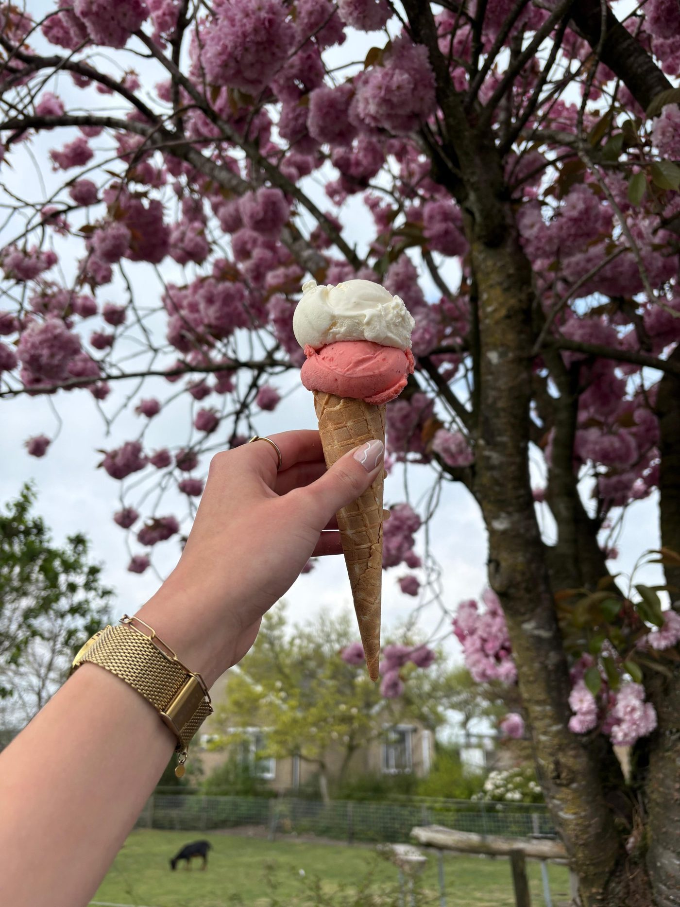
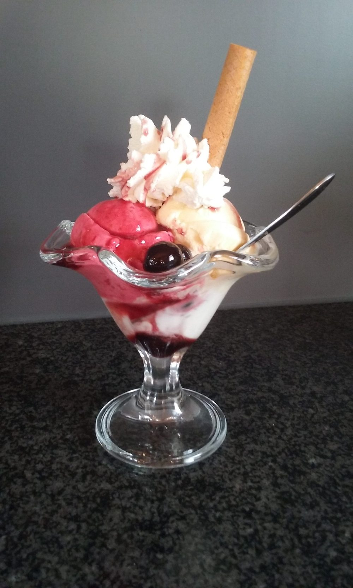
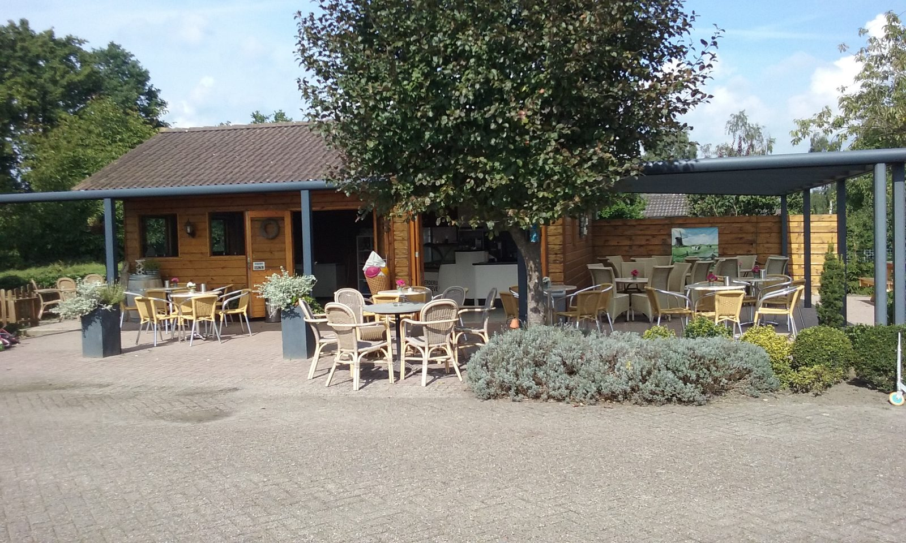
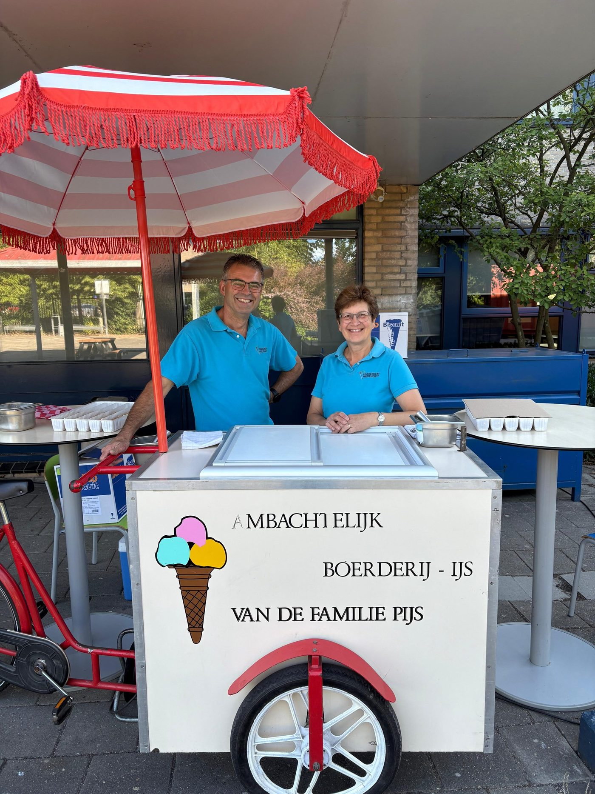
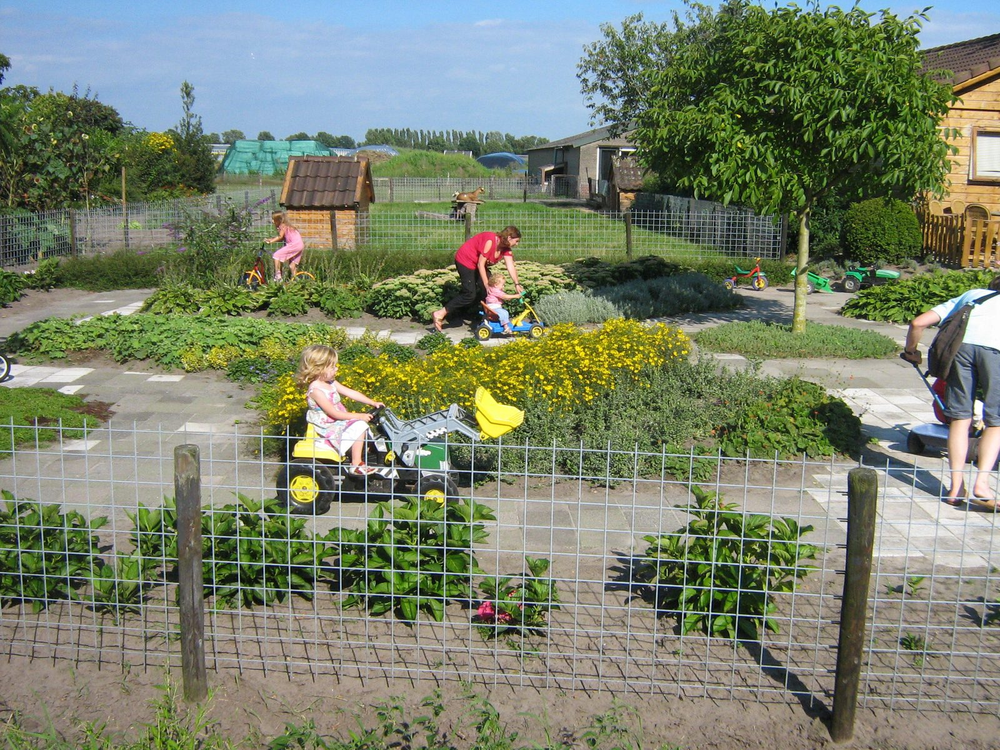
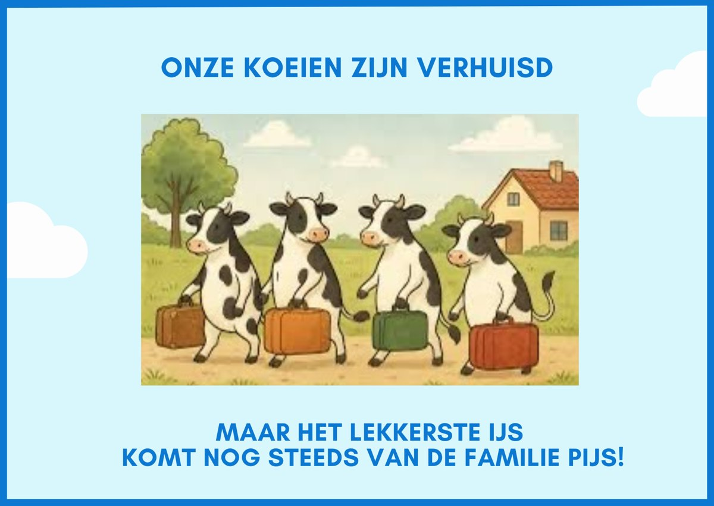

Ambachtelijk boerderij-ijs, door ons zelf gemaakt
Roomijs van verse melk en sorbet van vers fruit, sinds 1999 gemaakt op onze boerderij in Etten-Leur. Geniet op ons terras of neem een bak mee naar huis.

Ongeveer 30 smaken, in vier soorten
Al ons ijs wordt hier op de boerderij gemaakt, in onze eigen hygiënische ijsbereidingsruimte en volgens de HACCP.
Roomijs
Op de klassieke manier à l'Anglaise, van verse melk.
o.a. Stroopwafel, Boerenjongens, PistacheSorbet-ijs
Van vers fruit. Ook voor wie geen koemelk verdraagt.
o.a. Mango, Framboos, LimoncelloYoghurt-ijs
Fris en romig, puur of met fruit.
Yoghurt, aardbeien, amarenenDiabetes-ijs
Suikervrij ijs, gezoet met stevia.
Vraag naar de smaken
Op het terras of mee naar huis
In de zomermaanden staat onze schepvitrine vol. Kies een hoorntje, een bakje of een ijscoupe en geniet ervan op ons terras. Uiteraard is er ook koffie, thee en fris.
Liever thuis? Ons ijs neemt u mee in bekers van 1 persoon tot bakken van 5 liter.
- Hoorntje, bakje of coupe
- Koffie, thee en fris
- Bekers tot 5 liter
- Rolstoeltoegankelijk

Een ijscokar op uw feest
Heeft u een feest, of organiseert u een markt of evenement? We hebben meerdere ijscokarren te huur. U kiest de smaken, wij brengen de kar en halen hem na afloop weer op.
- Brengen en ophalen
- Zelf de smaken kiezen
- Inclusief ijskoekjes en schepmateriaal
- IJscoboxen voor kleinere groepen

Lekker buiten spelen op de boerderij
Terwijl u geniet van een ijsje, kunnen de kinderen buiten spelen en kennismaken met onze boerderijdieren. Er is genoeg te doen om het een tijd lang naar hun zin te hebben.
- Skelterbaan
- Trampoline
- Schommel
- Speelhuisje
- Boerderijdieren

Familie Pijs
"Onze koeien zijn verhuisd, maar het lekkerste ijs komt nog steeds van de familie Pijs!"Kees en Anja Pijs
Wij hebben de boerderij overgenomen van de ouders van Anja en ruim 35 jaar met veel plezier voor onze koeien gezorgd. In 1999 bouwden we er een ijsbereidingsruimte bij en begonnen we met ijs maken.
Eind 2025 zijn we gestopt met melken. Onze koeien wonen nu aan de andere kant van Etten-Leur, bij een broer en neef van Kees. Daar halen we de melk voor ons roomijs.
Openingstijden & contact
U vindt ons aan de rand van Etten-Leur, vlakbij de Vloeiweide. Wilt u op een ander moment langskomen of heeft u een vraag? Neem gerust contact met ons op.